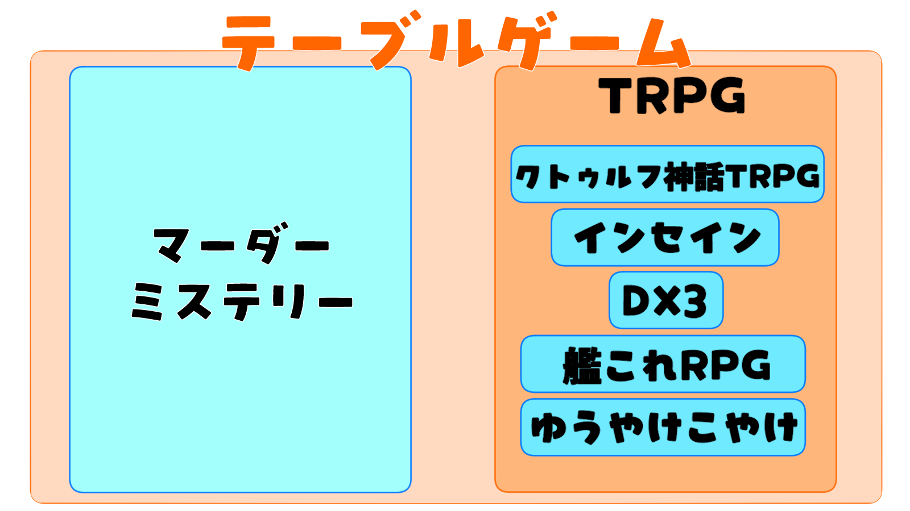

💡 TRPGってなに？
ゲームジャンルの関係性

テーブルトークロールプレイングゲームの略称です
シナリオを進行するGM（ゲームマスター）とPL（プレイヤー）に分かれてセッションを行います
RPGの中にも様々な種類があるように、TRPGの中にも「クトゥルフ神話TRPG」「アリアンロッド」「ダブルクロス」など多様なシステム（ゲームソフトのようなもの）が存在し、それぞれ世界観や遊び方が大きく異なります
基本的に紙、筆記用具、ダイスを用いて遊び、ゲームソフトの代わりに「ルールブック（通称：ルルブ）」を使用します
最近ではインターネットを使ったオンラインセッションが盛んで、PCやスマホさえ持っていれば気軽に遊ぶことができます
キャラクターは基本的に自分で作り、行動の成功・失敗はダイスの目に委ねられます
TRPG と マーダーミステリー
TRPG
- ▶ 自分でキャラクターを作成することが多い
- ▶ 行動の成否をダイスで決める
- ▶ 自由度などはシステムやシナリオ次第。CoCは自由度が高く協力型が多い傾向
- ▶ ルールブックが必要なことが多い
マーダーミステリー
- ▶ 配布されたキャラクター設定に従ってプレイする
- ▶ ダイスはあまり使わず、会話と推理が中心
- ▶ 個々の使命や目的達成を目指すことが多い
- ▶ ルールブックは不要
使用ツール
必要なもの
【必須】
PC、スマホ、タブレットのいずれか
【推奨】
ルールブック。CoCはルルブがなくてもある程度作成可能なため、初心者に限り未所持も歓迎しています。今後も続けたいと思ったら購入しよう!
ルールブックの選び方 (CoC)
【6版】 赤と緑の表紙。Amazonで6490円
【7版】 黄色と赤の表紙。新クトゥルフ神話TRPG。無料のクイックスタートガイドやサブスクアプリもあります
※サプリメント（DLCのようなもの）と間違えないように注意！
CoCの基本的な行動と判定
キャラクターが行動を起こす際の流れと、ダイス判定について簡単に説明します。
判定の流れ
- PLが行動を宣言: 「〇〇を調べたい」「敵に攻撃したい」など、PCの行動を宣言します。
- KPが判定を要求: その行動に必要とされる【技能】や【ステータス】を指定します。
- PLがダイスを振る: 1D100を振り、**技能値以下**の目が出れば成功です。
- KPが結果を伝える: 成功/失敗に応じた結果をKPが描写します。
成功度の種類 (6版の場合)
- クリティカル (スペシャル): 1-5の目。大成功。有利な結果になったり、特別な情報が得られたりします。
- 成功: 技能値以下の目（クリティカル以外）。行動が成功します。
- 失敗: 技能値より大きい目（ファンブル以外）。行動が失敗します。
- ファンブル (致命的失敗): 96-100の目。大失敗。不利な状況に陥ったり、予期せぬトラブルが起きたりします。
SANチェック
クトゥルフ神話の存在など、精神的にショッキングな出来事に遭遇した際に行われます。
SAN値の喪失はPCが狂気に陥る原因になります。失うSANの数はイベントによって異なり、1D6や0/1D4などで表記されます。
※0/1D4の場合、SANチェックに成功すれば0点、失敗すれば1D4点のSANを失います。
CoCキャラクターシート（CS）作成ガイド
キャラクターの能力を決定する主な**ステータス**と、そのダイス値についてです。CoCでは、これらの数値が行動の成否を左右します。
3d6 (STR, CON, POW, DEX, APP)
最低3、最高18、平均10.5
3～8が低い、9～12が普通、13以上は高めのイメージ。
2d6+6 (SIZ, INT)
最低8、最高18、平均13
8～11は低い、12～14が普通、15以上は高めのイメージ。
3D6+3 (EDU)
最低6、最高21、平均13.5
EDU+6歳が最低年齢。EDUが6ならどれだけ低くとも12歳。
主要ステータス
STR (筋力)
ドアをこじ開けたり、重いものを持ち上げたりする際に使用。戦闘時のダメージボーナスにも影響。
CON (体力)
健康状態、活気等。毒や溺れた時の抵抗等にも。HPの算出にも影響。
POW (精神力)
意志の力。高ければ高いほど魔術的素養が高い。MPや SAN の算出に使用。
DEX (敏捷性)
機敏さや器用さ。回避や行動順、逃走時に使用。
APP (外見)
容貌や好感度に影響。交渉技能と組み合わせることもできるが、あまり使い道はない。
SIZ (体格)
身長や体重といった体の大きさ。HPに影響。
INT (知性)
どれだけ学べるか、ちゃんと覚えているか。アイデア判定に使用。興味ポイント算出にも使用。
EDU (教育)
キャラクターの学歴や知識量。知識判定や職業ポイントの算出に使用。
HP / MP / 初期SAN
生命力/魔術のエネルギー/精神的な安定度。主にCON, POW, SIZから算出されます。
頻出用語集
TRPG、特にCoC（クトゥルフ神話TRPG）でよく使われる用語まとめ。多くは非公式な用語
システム紹介
私が特によくプレイする、魅力的なTRPGシステムを紹介します。それぞれ全く異なる体験ができますよ！
クトゥルフ神話TRPG (CoC)
コズミックホラー
宇宙的恐怖に立ち向かう一般人「探索者」となり、神話的存在の脅威に挑みます。謎を解き明かし生き残ることが目的。ロスト（死亡や発狂）の危険が常に伴う緊張感が特徴。
ダブルクロス The 3rd Edition
異能力バトル
異能力者となり、バトルを繰り広げます。派手な異能力バトルを楽しみたい人におすすめ。ロストすることはほとんどありません。
インセイン
マルチジャンルホラー
生き死によりも「使命達成」に重きを置くホラーRPG。各プレイヤーに秘密の使命が与えられ、疑心暗鬼や狂気が渦巻くドラマが展開。CoCよりもインモラルでサイコなシナリオが多いのが特徴
シノビガミ
忍者PVP
現代に生きる忍者「シノビ」となり、与えられた使命の達成を目指します。プレイヤー同士で協力することもあれば、敵対して戦闘になることも（PvP）。忍者になりきって駆け引きを楽しみたい人におすすめ